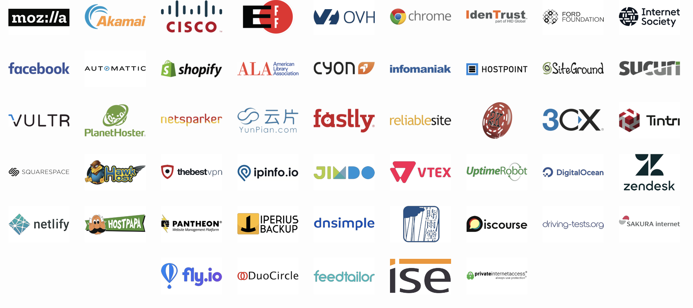

Progressive Web Apps
Your web app on steroids
Maxence Poutord - @_maxpou
Voxxed Days, Vienna, March 2018
Slides, links, etc.
maxpou.fr/talks/
Native apps are doomed
50%
80%
94%
of all U.S. smartphone users download zero apps per month
of time spent is in users' top 3 apps
of revenue in the App Store comes from just 1% of all publishers
App install friction

Do I really need an app for that?
Retention
* [More than 75% of App Downloads Open an App Once And Never Come Back](http://fortune.com/2016/05/19/app-economy/)...but...
Users time spent
Capability vs Reachability
How to mix them together?
Introducing Progressive Web Apps

#1 Linkable
1 page = 1 link
#2 Responsive

#3 Safe
Let's Encrypt
#4 App-like
Application shell
#5 Progressive
Work for every user, regardless of browser choice because they’re built with progressive enhancement as a core tenet.
Not every browsers are the same

#6 Fresh
Always up-to-date thanks to the service worker update process
Avoid this:

#7 Discoverable
Manifest.json
{
"name": "GitVub",
"short_name": "GitVub",
"icons": [
{
"src": "/static/img/icons/favicon-16x16.png",
"sizes": "16x16",
"type": "image/png"
},
// ...
],
"start_url": "/index.html",
"display": "fullscreen",
"background_color": "#f5f5f5",
"theme_color": "#424242"
}
#8 Re-engageable
#9 Installable
#10 Connectivity independent
Offline strategies
Workbox
#11 Single Page Application
Demo time!
github.com/maxpou/gitvub
Go... no go?
üëç PWA is just a set of good practices
Don't need to update your CV üòé
You probably already follow some of this rules
üëç Lighthouse
 Report example
Report example
üëç Speed matter
- 2.05 Seconds = Team Red Bull Racing tire change
- 5 seconds = average page load time
⚠️ 40% of users bounce from sites that take longer than 3 seconds
üòû Cons: what web can't do now
- calendar
- sms
- monetise (no option to buy like store)
- user feedback (stars/comments app)
- ...
ü§î Web payment API - Draft

üò¢ Users not (yet) use to the install button
Pros
Feedbacks
Tinder
https://medium.com/@addyosmani/a-tinder-progressive-web-app-performance-case-study-78919d98ece0Thank you.
Back up slides
‚ö†Ô∏è Service Workers + subdomains = üíî
Warning if you have:
- www.website.com
- secure.website.com
- french.website.com
All this domain will register a different Service Worker